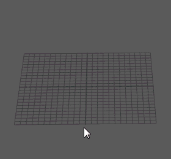
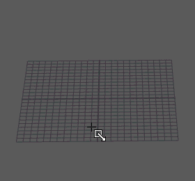
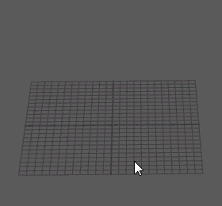

使用交互式多边形创建功能，您可以在创建期间手动调整基本体大小。它提供了菜单或工具架创建功能所无法提供的视觉反馈级别。
以交互方式创建多边形基本体
- 启用“创建 > 多边形基本体 > 交互式创建”(Create > Polygon Primitives > Interactive Creation)。
- 选择“创建 > 多边形基本体”(Create > Polygon Primitives)，并选择基本体类型，或者从“多边形”(Polygon)工具架中选择基本体类型。
注： 您可以通过选项框 (
 ) 更改非交互式属性，例如，“半径”(Radius)、“分段”(Divisions)或“纹理映射 UV”(Texture Mapping UVs)。详细信息请参见多边形基本体选项。
) 更改非交互式属性，例如，“半径”(Radius)、“分段”(Divisions)或“纹理映射 UV”(Texture Mapping UVs)。详细信息请参见多边形基本体选项。
- 使用适当的方法以交互方式创建基本体：
基本体类型 程序 示例 “球体”(Sphere)、“圆环”(Torus)、“棱锥”(Pyramid)、“足球”(Soccer Ball)和“柏拉图多面体”(Platonic Solids)
- 在场景视图中，单击并拖动以创建基本体。
注： “圆环”基本体还需执行单击并拖动步骤，以指定“截面半径”(Section Radius)属性。
“立方体”(Cube)、“圆柱体”(Cylinder)、“圆锥体”(Cone)和“棱柱”(Prism)
- 在场景视图中，单击并拖动以指定位置和基础大小。
- 再次单击并拖动以指定高度。
“管道”(Pipe)和“螺旋线”(Helix)
- 在场景视图中，单击并拖动以指定位置和基础大小。
- 再次单击并拖动以指定高度。
- 单击并拖动以指定这些基本体类型的以下属性：
- “管道”(Pipe) － 指定管道的厚度。
- “螺旋线”(Helix) － 指定圈数。
如果要在创建过程中跳过以交互方式设置属性，请单击鼠标移动到下一步。注： 您可以使用正交视图更准确地设置基本体的轴。不管创建基本体时使用的是何种视图（顶视图、前视图或侧视图），该视图都是将对齐基本体的轴（Y、Z 或 X）的方式。 - 在场景视图中，单击并拖动以创建基本体。
- （可选）在创建过程中，按住 Shift 键或 Ctrl 键可实现以下效果：
- Ctrl 键：从其中心增大平面基本体和立方体基本体。（不影响所有其他基本体）按后续交互式步骤调整基本属性时，按 Control 键可立即降低鼠标速度。
- Shift 键：将所有基本体约束到三维等边比例，并从其基础增大它们。按后续交互式步骤调整基本属性时，按 Shift 键可立即提高鼠标速度。
- Ctrl + Shift：将所有基本体约束到三维等边比例，并从其中心增大它们。
此外，在交互式创建过程中随时按 Enter 键，便可立即完成基本体的创建，并跳过任何剩余的属性。
- 基本体创建步骤完成之后，对于主动选定的对象，基本体的线框颜色将从鲜绿色更改为绿色。
注： 含有端面的基本体（“棱锥”(Pyramid)、“圆柱体”(Cylinder）、“圆锥体”(Cone)和“管道”(Pipe))还有一个称为“创建后调整端面细分数”(Adjust cap subdivisions after create)的属性。默认情况下，该属性已禁用。在基本体的工具选项窗口中启用该功能时，除了执行这些基本体类型的交互式创建过程以外，还需执行另一步骤。
通过单击一次创建多边形基本体
- 选择“创建 > 多边形基本体 > 交互式创建”(Create > Polygon Primitives > Interactive Creation)。（确保“交互式创建”(Interactive Creation)菜单项旁边出现复选标记）
注： 您可以通过选项框 () 更改非交互式属性，例如，“半径”(Radius)、“分段”(Divisions)或“纹理映射 UV”(Texture Mapping UVs)。详细信息请参见多边形基本体选项。
- 在场景视图中单击以创建基本体。
- 按 T 键以激活“显示操纵器工具”(Show Manipulator Tool)。
- 在显示的视图中编辑器中，调整 poly<shape> 节点属性。
以交互方式创建多个多边形基本体
- 禁用“创建 > 多边形基本体 > 完成时退出”(Create > Polygon Primitives > Exit on Completion)。
现在可以连续创建多个多边形基本体，而不必每次都返回到“多边形基本体”(Polygon Primitive)菜单或“工具架”(Shelf)。
有用的交互式创建选项
在交互式基本体创建过程中，可以将多边形捕捉到场景中的现有对象。可以捕捉到栅格；曲线；CV、顶点或枢轴；激活对象。
使用这些功能，可以在创建基本体时，捕捉到由场景中任何其他对象定义的线或平面中的投影点。例如，可以创建一个圆柱体作为天文台的屋顶上的望远镜。
提示： 某些栅格捕捉操作可能会限制透视视图中的交互式基本体创建。例如，如果启用栅格捕捉并以交互方式创建立方体的底，则在透视视图中工作时若栅格捕捉选项处于启用状态，则无法通过垂直拖动来创建高度组件。
应改为在透视视图中创建立方体的底，然后切换到前正交视图或侧正交视图，以使用栅格作为参考来捕捉立方体的高度。